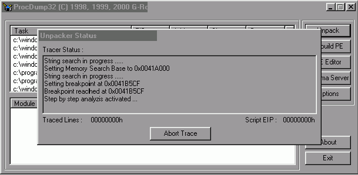
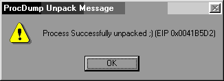
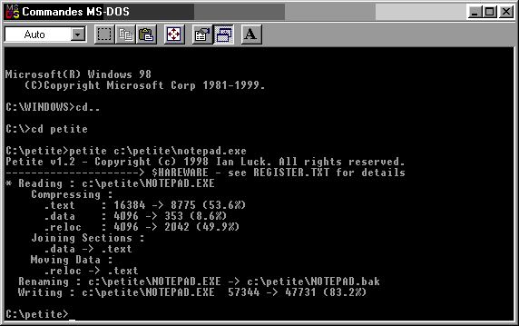
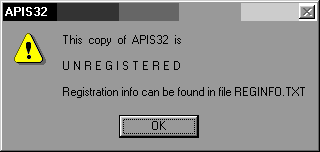
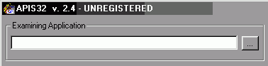
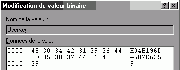

|
API Spy 32 version 2.4
|
|
Packer: Petite 1.2
Calculated entrypoint: 54272 / 0000D400h (RVA: 0001A000h)
File is executable
Objects (object align = 00001000h):
Name Virt size RVA Phys size Phys Ofs
.text 0000F000h 00001000h 00003A00h 00000400h
.idata 00001000h 00010000h 00000C00h 00003E00h
.rsrc 00009000h 00011000h 00008A00h 00004A00h
.madmat 0000D268h 0001A000h 0000161Ch 0000D400h
Il est capable de reconnaître un grand nombre de Packer, mais je le trouve
un peu léger, au regard de mes "besoins" pour ce qui concerne les caractéristiques des
sections, éventuellement l'imageBase (en général 00400000, mais ce n'est pas une règle
absolue)
L'Entry Point est donc en RVA 0001A000 + les 00400000 de l'ImageBase , soit 0041A000 :
:0041A000 669C PUSHF :0041A002 60 PUSHAD > sauvegarde des registres :0041A003 E8CA000000 CALL 0041A0D2 :0041A008 0300 ADD EAX,[EAX]
Qui dit Pushad, dit Popad. Il suffit de tracer un peu le programme pour le trouver
:0041B5CF 61 POPAD > restitution des registres :0041B5D0 669D POPF :0041B5D2 E9E99FFEFF JMP 004055C0
Et le JMP 004055C0 va nous donner la valeur de l'Original
Entry Point d'API Spy 32.
Reste à réaliser un Dump de cette cible, histoire d'obtenir les String Data References qui vont nous
aider à débugger le programme.
Il y a différentes solutions pour y arriver.
L'une des plus facile est d'utiliser TRW 2000 :
:pedump
PE dump
VirtualSize RVA PhysicalSize PhysicalOffset
----------
f000 1000 3a00 400
1000 10000 c00 3e00
9000 11000 8a00 4a00
d268 1a000 161c d400
Writing DOS head
Writing PE head, from 81630554, len f8+a0
Writing 400218 len 27050
(au passage, vous apprécierez la facilité d'utilisation
de la commande PeDump de
TRW 2000, qui se charge de lui même de nommer un Dump.exe dans le répertoire de l'application/cible).
Sur la version de SoftIce que j'utilise, je n'ai pas encore installé IceDump (bien pratique lui aussi),
mais il est facile de créer un autre Dump en utilisant le couteau suisse de l'UnPackage : ProcDump
Process :
- BPX sur l'adresse du passage de relais en 0041B5D2
- " a " pour passer en mode assemblage
- JMP EIP pour forcer le programme à boucler sur lui-même
- F5 pour quitter SoftIce
- Ouverture de ProcDump, et sélection de " Rebuilt
import Table " dans " Options "
- Clic Droit sur la cible dans la fenêtre de ProcDump, et sélection de " Dump Full "
- Sauvegarde du Dump obtenu, et réouverture de celui ci par " PE Editor "
- Modification du RVA de l'Entry Point qui passe de 01A000 à 0055C0
Good ?
Le dump obtenu RUN sans problème, et se désassemble sans frémir.
Glop ! Glop !
Mais que de manipulations pour un malheureux Dump !
Et si nous automatisions tout cela, dans la mesure ou le Script de ProcDump ne le permet pas malgré une
option "Petite < 1.3"?
Le problème, bien qu'il soit mineur, est que la signature du passage de relais (61 66 9D)
:0041B5CF 61 POPAD :0041B5D0 669D POPF :0041B5D2 E9E99FFEFF JMP 004055C0 > vers OEP
n'est pas accessible dès l'Entry Point de la cible
compressée.
En bloquant la fenêtre des Data de SoftIce sur 0041B5CF, les codes qui nous intéressent vont apparaître
en traçant sur les lignes suivantes :
:0041A104 800424A1 ADD BYTE PTR [ESP],A1 :0041A108 50 PUSH EAX :0041A109 800424BF ADD BYTE PTR [ESP],BF :0041A10D 833A00 CMP DWORD PTR [EDX],00 > ici
Le script envisagé va devoir trouver en premier des
codes "évidents" placés non loin des adresses ci dessus, avant de s'occuper de rechercher
la signature de pETITE, et du passage de relais.
Les lignes qui suivent me semblent faire parfaitement l'affaire :
017F:0041A196 F3A4 REPZ MOVSB 017F:0041A198 5F POP EDI 017F:0041A199 5E POP ESI 017F:0041A19A C3 RET
En recherchant un F3 A4 5F 5E C3 (accésible dès l'Entry point de pETITE en 0041A000), je vais pouvoir rebondir vers la recherche de ma seconde signature (61 66 9D). Voici le script que je vous propose :
[Petite 1.2] L1=LOOK F3,A4,5F,5E,C3 ; 1er signature L2=OBJR ; nouvelle recherche L3=LOOK 61,66,9D ; seconde signature L4=BP ; pose d'un BreakPoint L5=STEP ; début du traçage OPTL1=00000000 ; les lignes suivantes OPTL2=01000001 ; correspondent aux options OPTL3=01010001 ; que vous pouvez habituellement OPTL4=00030000 ; sélectionner dans OPTL5=00000000 ; le menu " OPTIONS " de ProcDump
En réutilisant notre couteau suisse, mais cette fois ci via le bouton " UnPack ", vous verrez les messages suivant défiler :

String search in progress ..... Setting Memory Search Base to 0x0041A000 ; EntryPoint String search in progress ..... Setting breakpoint at 0x0041B5CF ; second signature trouvée Breakpoint reached at 0x0041B5CF Step by step analyzis activated ... ; commence le tracing |
 |
Glop ! Glop !
Ca marche !
C'est bien beau, un script, mais il arrive parfois qu'ils ne fonctionnent que pour un programme donné, et
qu'en l'appliquant sur une autre cible, ProcDump n'arrive pas à retrouver ces petits...
Histoire de vérifier rapidement si notre script est un peu plus gnéral que pour API Spy 32 uniquement,
le plus simple est de Packer un autre programme avec pETITE 1.2 est vérifier ainsi si le script a une chance
d'être plus générique.
Une fois de plus, c'est Notepad.exe qui va jouer le rôle du programme test. A croire qu'on lui en veut, à
ce petit truc... j'ai l'impression qu'aucun exécutable n'a été plus sollicité pour
toutes les bidouilles possibles que ce programme de 56 Ko.

Une fois packé, le programme va gagner 9 Ko soit grosso
modo un gain de 17%. Une fois ProcDumpé le programme va par contre passer à 116 Ko. La différence
est essentiellement due à la présence des codes de pETITE qui bien que non utilisés restent
présent dans le Dump obtenu.
A titre de comparaison, API Spy 32.exe fait 59 Ko (admirable ! il existe encore des programme qui ne fassent pas
obligatoirement 140 Mo...). En utilisant le script, il passe à 137 Ko. 135 Ko en utilisant la technique
du JMP EIP/Dump Full de ProcDump, et 157 Ko avec la fonction intégrée PeDump de TRW 2000.
Vainqueur de notre grand test (benchmarck Chr 1s Tal), le Dump Full de ProcDump !
Quelle que soit la méthode, wdasm va donner les String Data References qui vont nous simplifier la suite
de la correction des Bugs dont est atteint API Spy 32 :
Infections :
|  | - Splash Screen au lancement de l'application, avec la mention " UNREGISTERED
" - Immédiatement derrière, une boite de dialogue " this copy is UNREGISTERED " et "Registration info can be found..." - A nouveau " UNREGISTERED " qui s'affiche dans le bandeau d'écran au lancement de la fenêtre principale de l'application (la même chaîne de cractères est elle utilisée pour tous les " UNREGISTERED " ?) |
| - Un bouton " Register " dans le bas de cette fenêtre qui donne accès
à une boite d'enregistrement à deux champs (Name et serial), et un message d'erreur " the registration
information you provided... " - Une boite " About " avec une fois de plus le texte " UNREGISTERED " (soit 4 fois cette phrase qui va s'afficher). |
 |
Il y a peut être encore d'autres infections Sharewares, mais celles ci vont
être suffisantes pour le moment.
Qu'avons nous comme Strings Data dans Wdasm :
"Registered to "
"Registration info can be found "
"Thanks for Registering APIS32!"
"The registration information you "
"This copy of APIS32 is"
"UNREGISTERED"
"UserKey"
"UserName"
En double-cliquant sur ces Strings, vous trouverez rapidement un point commun lié
à la procédure Contrôle/vérifications/tests : le Call 004046A0.
Voici un "morceau choisi" des routines les plus intéressantes :
* Possible StringData Ref from Data 0bj ->" - " I :0040175A 6828934000 push 00409328 > " - " :0040175F 68EOD14000 push 0040D1EO > " API Spy 32 " :00401764 FF15F8024100 call dword ptr [004102F8] :0040176A E8312FOOOO call 004046AO > ? ? ? :0040176F A374CE4000 mov dword ptr [0040CE74], eax -> Flag ? :00401774 EB01 jmp 00401777 :00401777 0ACO or al, al > en fonction de EAX :00401779 7402 je 0040177D > vous irez en Pas Glop! :0040177B EB2C jmp 004017A9 > ou en Glop! Glop!
* Possible StringData Ref from Data 0bj ->"The registration information you provided is incorrect. P1ease"
:0040177D BFE8904000 mov edi, 004090E8 :00401782 BAEOD14000 mov edx, 0040D1EO
------------------------snips---------------------------------
* Referenced by a (U)nconditional or (C)onditiona1 Jump at Address: |:0040177B(U) I * Possible StringData Ref from Data 0bj ->"Registered to " I :004017A9 BF40904000 mov edi, 00409040 :004017AE BAEOD14000 mov edx, 0040D1EO * Possible StringData Ref from Data 0bj ->"Thanks for Registering APIS32!" I :0040181E BFA8904000 mov edi, 004090A8 :00401823 BAEOD14000 mov edx, 0040D1EO
Et va inscrire les informations Name et Serial dans la base
de registre.
Une recherche sur une autre String va nous redonner le Call 004046A0 :
:004015CC E8CF300000 call 004046A0 > Contrôle :004015D1 EB01 jmp 004015D4 :004015D4 0ACO or al, al > Registered ? :004015D6 7402 je 004015DA > Pas Glop! pas Glop! :004015D8 EB35 jmp 0040160F > Glop! Glop! * Referenced by a (U)nconditional or (C)onditiona1 Jump at Address: |:004015D6(C) * Possible StringData Ref from Data 0bj ->"UNREGISTERED"
Vous retrouverez une fois de plus le même schéma pour la String Data suivante :
:004025E6 E8B5200000 call 004046AO :004025EB A374CE4000 mov dword ptr [0040CE74], eax :004025FO EB01 jmp 004025F3 :004025F3 0ACO or al, al :004025F5 7402 je 004025F9 :004025F7 EB70 jmp 00402669 * Referenced by a (U)nconditional or (C)onditiona1 Jump at Address: |:004025F5(C) I * Possible StringData Ref from Data 0bj ->"This copy of APIS32 is"
Le or al,al va exécuter un OU logique sur le registre EAX. Si celui ci
est égal à zéro, vous êtes Bad Boy.
Vous ne pensez pas que le call 004046A0 mérite une petite visite ?
* Referenced by a CALL at Addresses: |:004015CC , :0040176A , :00401D1A , :00401F39 , :004025E6 I :004046AO push ecx :004046A1 push ebx :004046A2 push ebp :004046A3 push esi :004046A4 push edi :004046A5 push 00000050 :004046A7 push 0040C6AO * Possible StringData Ref from Data 0bj ->"UserKey" I :004046AC push 00409608 :004046B1 call 004049DO :004046B6 add esp, 0000000C :004046B9 cmp eax, 00000010 > serial de 17 caractères ? :004046BC jge 004046C6 > Good Boy continue :004046BE xor eax, eax > Bad Boy est Xoré
Pour un crack facile, inutile d'aller beaucoup plus loin.
En forçant EAX=01 à la place du Xor, vous quittez la procédure, mais avec la valeur dans EAX
qui va vous faire passer pour Registered. Il ne restera plus qu'à patcher le Dump, ou à utiliser
un Memory Patcher, comme nous le verrons à la fin de cette bafouille.
Voyons quand même un peu la suite.
Qui dit Userkey, UserName, dit souvent base de registre. Qu'en est-il de ce coté, sachant qu'il y a 8 adresses
qui se rapportent à ces Strings, ce qui permet d'émettre l'hypothèse que bon ou mauvais, le
Name et le serial entré sont mémorisé quelque part ?

[HKEY_LOCAL_MACHINE\Software\APIS32]
"UserKey"=hex(0):45,30,34,42,31,39,36,44,2d,35,30,37,44,36,43,35,39
"UserName"=hex(0):63,68,72,69,73,74,61,6c
Première info qui va peut être pouvoir nous aider, le Name et le Serial sont sous leurs formes Hexa/Ascii : 63h est la correspondance ASCII du " c "...
* Possible StringData Ref from Data 0bj ->"UserName" I :004046CD push 004095F8 :004046D2 cal1 004049DO :004046D7 add esp, 0000000C :004046DA cmp eax, 00000005 > Name de 5 caractères ? :004046DD jge 004046E7 > Good Boy continue :004046DF xor eax, eax > Bad boy est Xoré
Vous êtes au tout début de la routine de vérification
du serial entré. Pour vous éviter une indigestion de Dead Listing, je ne vais vous donner que les
lignes les plus représentatives de cette routine :
De 004046E7 à 00404730 le programme va déplacer le serial dans un autre espace mémoire. Vous
aurez donc le serial entré en [0040C6B4] et en [0040C6A0]
:0040473A mov esi, 0040C6A1 > 2d caractère du serial :0040473F mov edi, 0040C6B4 > 1er caractère du serial :00404744 push edi > serial sauvé sur la pile :00404745 call 00404930 > visite obligatoire
:00404930 mov ecx, dword ptr [esp+04] > pointe sur [0040C6B4] :00404934 mov al, byte ptr [ecx] > 1er caractère du serial :00404936 cmp al, 39 > est-ce un chiffre (<9) ? :00404938 jle 0040493E > si oui, saute :0040493A add al, C9 > ajoute 201d (conversion) :0040493C jmp 00404940 > saute :0040493E add al, D0 > ajoute 208d (conversion) :00404940 mov cl, byte ptr [ecx+01] > second caractère du serial :00404943 cmp cl, 39 > est-ce un chiffre (<9) ? :00404946 jle 00404951 > si oui, saute :00404948 shl al, 04 > décalage d'un octet sur la gauche :0040494B sub cl, 30 > déduit 30 à CL :0040494E or al, cl > AH ! :00404950 ret
Dans ce Call, vous avez une manipulation de votre serial sur
le 1er (0040C6B4) et le second caractère (0040C6A1) de celui ci.
Le sous-registre AL va recevoir la valeur hexa/ASCII de [0040C6B4], par exemple " 34 " si votre premier
caractère est un " 4 ". Le Add Al,D0 va rajouter 208d à cette valeur ASCII " 34 "
qui va se " convertir " en un " 4 " (le chiffre hexadécimal). Le sous-registre CL (la
partie basse de ECX) va prendre quant à lui la valeur de [0040C6A1] que le programme va " convertir
" en l'équivalent hexadécimal de sa valeur ASCII.
AL va être décalé d'un octet sur la gauche par le shl al,04 et forcer le registre EAX à
prendre la valeur 40.
Puis Al va être ORé avec CL. On pourrait résumer cette routine par :
Al= 1er caractère du serial (par exemple 4)
Cl= 2d caractère du serial (par exemple 8)
(Al x 10) OR Cl Soit (4 x 10) + 8 = 48 ->
le résultat est dans EAX
Le OR Al, CL va être la première manipulation intéressante de notre serial. A la sortie de
cette routine, CL est remis à zéro par BL qui joue le rôle de compteur, puis CL prend la valeur
50h, et EDI va pointer sur le 3ème caractère du serial entré:
:0040474A mov cl, bl :0040474C add esp, 00000004 :0040474F add cl, 50 :00404752 add edi, 00000002
Nouvelle manipulation, le résultat obtenu est XORé avec 50h :
:00404755 xor al, cl > 50 - 48 -> Al = 18 :00404757 inc bl > le compteur est incrémenté :00404759 mov byte ptr [esi-01], al > le résultat est mémorisé :0040475C mov byte ptr [esi], 00 > et NULL Terminated :0040475F inc esi > pointe sur le caractère suivant :00404760 cmp bl, 08 > 8 caractères ont été traités ? :00404763 jb 00404744 > non -> boucle
Cette opération s'effectue uniquement sur 8 caractères,
ce qui, avec le test d'un serial (en 004046B9) ayant une longueur de 11h caractères (17d), laisse à
supposer que celui ci est composé de deux parties de 8 caractères chacune, probablement séparées
par un " - "
Une fois le serial traité une première fois (vous obtiendrez au final une chaîne du type 18 C2 67 83 84 85 86 87). Le traitement
suivant va se faire dans la foulée sur la chaîne crée, et sur ce principe :
EAX vaut 1 à l'entrée de cette routine.
:0040498C mov dl, byte ptr [edi+esi] > 1er chaine crée (18 C2 67...) :0040498F mov edi, edx > EDI = DL = 1ere valeur :00404991 mov edx, edi > EDX = EDI = par ex:18h :00404993 imul eax, edx > EAX x EDX :00404996 cmp eax, 00008899 > EAX >= 8899h :0040499B jle 004049A7 > Non -> saute :0040499D cdq > Oui :0040499E mov ebx, 00008899 > EBX = 8899h :004049A3 idiv ebx > EAX/8899h reste dans EDX :004049A5 mov eax, edx > EAX = reste de la division :004049A7 mov edx, dword ptr [esp+14]> nb de valeurs à traiter (8) :004049AB dec edx > décrémentée :004049AC mov dword ptr [esp+14],edx > et remémorisée :004049B0 jne 00404991 > si EDX >0 -> loop :004049B2 cdq > EAX < 8899 :004049B3 mov edi, 000000BB > EDI = BBh :004049B8 idiv edi > EAX/BBh reste dans EDX :004049BA inc ecx > incrémente compteur :004049BB cmp ecx, 00000008 > 8 valeurs traitées ? :004049BE mov byte ptr [esi], dl > crée nouvelle chaîne (1D B6...) :004049C0 mov byte ptr [ecx+ebp], 00 > NULL terminated :004049C4 jl 00404976 > loop s'il reste des valeurs :004049C6 pop edi :004049C7 pop esi :004049C8 pop ebp :004049C9 pop ebx :004049CA ret
A la sortie de cette routine, une nouvelle chaîne a
été crée, du type 1D B6 89 6D 37 17 A1
98.
C'est ensuite au tour du Name entré d'être bidouillé :
:00404774 mov edi, 0040CF00 > Name entré :00404797 mov ecx, edx > ECX = Name+1 (nb caractères du Name+1) :004047AA dec ecx > Nb caractère du Name :004047AB cmp cl, 08 > seul 8 premiers caractères traités | :004047EB mov ecx, 0040C6B4 > ECX = 2d chaîne crée :004047F0 mov esi, 00000008 > 8 valeurs à traiter dans cette chaîne :004047F5 mov al, byte ptr [ecx] > AL = 1ere valeur de la chaîne :00404802 mov dl, byte ptr [ecx+0A] > DL = 1ère lettre du Name :00404813 xor edx, eax > DL XOR AL :00404815 add ebp, edx > résultat mémorisé dans EBP
C'est en 00404813 que tout ce joue. Les caractères
du Name et les valeurs de la seconde chaîne sont manipulés par le XOR. Il faut, pour que votre serial
soit valide, que les valeurs de la seconde chaîne générée soient identiques aux caractères
composant votre Name (ce qui peut paraître surprenant dans la mesure ou le Name doit comprendre au moins
5 caractères). Bref, la seconde chaîne recrée votre Name !
EBP reçoit le résultat du Xor entre les caractères composant le Name et la seconde chaîne
qui a été crée à partir de la première, elle-même crée à
partir du serial entré. EBP est donc sensé être égal à zéro si votre serial
est valide. Le TEST EBP,EBP va alors modifier le Zéro Flag qui par le SETE AL suivant va placer la valeur
01 dans le registre EAX.
:0040481E test ebp, ebp :00404820 pop esi :00404821 pop ebp :00404822 sete al :00404825 pop ebx :00404826 pop ecx :00404827 ret
KeyGener API Spy 32:
Un keyMaker pourrait avoir cette allure :
;=========================================================================
; KeyGenerator
; la bonne clé se trouve dans EDX à la fin de la routine
;=========================================================================
pushad
mov [Key], 0 ; mise à 0 de Key pour serials multiples
mov dword ptr [Name_Length],eax ; lg Name récupérée par GetDlgItemtext
mov edx, offset Name_Length ; mis dans edx
movzx ebx, byte ptr [edx+1] ; ebx = Name+1
cmp eax, 05 ; 5 caractères mini pour le name
jl Trop_court ; affichage "Name trop court"
cmp ebx, 8 ; Name+1 > 8 ?
jnl no_movsb ; pas de déplacement
lea edi, Key ; charge adresse Key
lea esi, _Name ; charge adresse Name
mov ecx, 8 ; ecx = taille du cache
sub ecx, ebx ; ecx = ecx - ebx (name+1)
rep movsb ; déplace Name ->Key de ECX caractères
mov dword ptr [edi],0 ; et termine la chaine par des 0000
mov dword ptr [edi+4],0 ; pour permettre serials multiples
no_movsb:
xor ecx, ecx ; compteur nb de caractère
loop1:
call generator ; Key2 va recevoir une valeur de la chaîne
inc ecx ; caractère suivant
cmp ecx, 8 ; tous traités?
jl loop1 ; non -> loop
lea edi, Key2 ; oui -> charge adresse chaîne généré
xor ebx,ebx ; compteur caractères du serial à créer
loop2:
movzx eax, byte ptr [edi+ebx] ; 1 valeur de la chaîne dans EAX
mov cl, bl ; compteur dans CL
add cl, 50h ; ajoute 50h
xor al, cl ; valeur chaîne XOR cl
mov [edi+ebx], al ; stocké dans Key2
call ALtoAX ; et converti en chiffre
shl bx, 1
mov word ptr [ebx+Serial], ax ; puis stocké dans @ Serial
shr bx, 1
inc bl ; incrémente compteur
cmp bl, 8 ; les 8 caractères sont générés?
jb loop2
lea edi, Key2 ; EDI = @ où va être placé le serial
lea esi, Serial+8 ; ESI pointe sur adresse serial+8
mov cx, 8 ; nb de caractères à déplacer
rep movsb ; déplacement
lea esi, Key2 ; ESI = @ où va être placé le serial
lea edi, Serial+9 ; EDI pointe sur adresse serial+9
mov cx, 8 ; 8 caractères à déplacer
rep movsb ; déplacement
mov byte ptr [Serial+8], 2dh ; rajoute le tiret (-)
mov byte ptr [Serial+11h], 0 ; NULL Terminated String
mov edx, offset Serial ; récupère le serial dans EDX
jmp Affiche
; ----------------------------------------------------------------------------
; Le programme va tourner jusqu'à ce qu'une valeur corresponde
; au caractère du Name en cours et la mémoriser dans Key2
; ----------------------------------------------------------------------------
generator proc
loop3:
lea esi, [Key2] ; Key2 = Chaîne à créer
xor edx, edx ; coef = 0
mov eax, 1 ; mémoire = 1
mov byte ptr counter, 7 ; compteur = 7
mov dl, [ecx+esi] ; ECX = nb caractères
mov edi, edx ; sauve coef dans EDI
loop5:
mov edx, edi ; récupère coef
imul eax, edx ; mémoire x coef
cmp eax, 8899h ; le résultat dépasse 8899?
jle loop4 ; va en caractère suivant
cdq ; sinon
mov ebx, 8899h ; ebx = 8899
idiv ebx ; mémoire/coef
mov eax, edx ; reste dans EAX
loop4:
dec counter ; les 8 boucles sont passés?
jnz loop5 ; non -> loop
cdq
mov edi, 0BBh ; EDI = BB
idiv edi ; EAX/EDI
cmp byte ptr [ecx+Key],dl ; compare si le reste = caractère du Name
jz exit_proc ; si egale alors c'est Good -> bye bye
inc byte ptr [Key2+ecx] ; caractère suivant. Incrémente chaîne à créer
jmp loop3
exit_proc:
ret
generator endp
Patcher pETITE 1.2:
Du plus simple au plus compliqué, commençons avec un Memory Patcher.
R!SC Process Patcher, via un script, va permettre de créer un petit loader qui se chargera de lancer l'application,
et de chercher les adresses à modifier. Comme la cible est compressée, il faudra lui laisser un peu
de temps pour qu'il puisse effectuer la modification attendue :
T=30000: ; 30000 milisecondes F=apis32.exe: ; nom du programme à lancer P=4046BE/33,C0/B0,01: ; modification à apporter à l'adresse 004046BE $ ; fin du script
Un peu plus compliqué, il y a le Hard Patching de l'application.
Dans la mesure où le passage de relais de pETITE n'est pas lisible dès l'EntryPoint, il va falloir
agir en deux temps :
- Coincer une adresse " clean " dès l'Entry Point, un peu après que le passage de relais
sera devenu accessible à son tour (donc après l'adresse 0041A10D). Les codes à cette adresse
devront pouvoir être remplacés par les 5 octets nécessaires à un JMP long sans perturber
le programme. Ce JUMP devra permettre de se rendre à l'adresse d'un premier patch.
- Modifier avec le patch1 le JMP OEP, avant que pETITE ne passe le relais à API Spy 32, pour forcer pETITE
à se rendre à un Patch2 qui modifiera API Spy à l'adresse souhaitée (et désormais
décompressée).
1- Trouver une adresse
En partant de 0041A10D, et en traçant un peu, vous verrez un test dword ptr [EDX], 80000000 qui devrait
parfaitement convenir :
.0041A10D: 833A00 cmp d,[edx],000 .0041A110: 0F84A7140000 je .00041B5BD .0041A116: F70200000080 test d,[edx],080000000 .0041A11C: 741B je .00041A139
2- Trouver de la place pour les Patchs
Il existe de nombreuses variantes pour trouver de la place. L'une d'entre elles consiste à squatter un espace
en fin d'une section, là où pour une question d'alignement sur un multiple du CODE, le compilateur
a complété cette section par du PADDING. Le problème avec un (bon) compresseur, c'est qu'il
va justement chercher à supprimer au maximum les 0000 qui ne servent à rien.
Une autre solution consiste à prendre le risque de modifier la section .rsrc, là où le programme
va stocker ses icônes. Dans la mesure ou nos patchs vont être tout petit, l'altération éventuelle
de ces icônes est en général invisible. Il faudra par contre s'assurer que la décompression
du programme ne viendra pas interférer avec notre patch. Un BPR W (Write) sur les adresses convoitées
permettra de s'assurer que rien ne viendra écraser les zolis codes que l'on va y placer.
Good ! je vais m'installer en 00411F90.
3- Détourner pETITE vers le patch 1
.0041A116: E9757EFFFF jmp 00411F90 > aiguillage .0041A11B: 90 nop > équilibrage
4- 1er patch
Notre cible est celle ci :
:0041B5CF 61 POPAD :0041B5D0 669D POPF :0041B5D2 E9E99FFEFF JMP 004055C0 > devra renvoyer vers patch 2
Et pour cela notre patch 1 va modifier le JMP en 0041B5D2. Je vous rappelle que les octets doivent s'écrire à l'envers.
:00411F90 C705D3B54100D569FFFF MOV DWORD PTR [0041B5D3],FFFF69D5 :00411F9A C605D2B54100E9 MOV BYTE PTR [0041B5D2],E9 :00411FA1 F70200000080 TEST DWORD PTR [EDX],80000000 :00411FA7 E96F810000 JMP 0041A11B
Le programme va remplacer le JMP 004055C0 par un JMP 00411FAC,
soit remplacer E9E99FFEFF par E9D569FFFF
Puis les codes que notre JMP Aiguillage a écrasé (en 0041A116) vont être réécrit
avant de renvoyer le programme continuer sa route comme si de rien n'était.
5- 2ème Patch
pETITE va donc continuer à décompresser API Spy 32, et arrivé en 0041B5D2, il va se rendre
à l'adresse du Patch 2 :
:00411FAC 66C705BE464000B001 MOV WORD PTR [004046BE],01B0 :00411FB5 E90636FFFF JMP 004055C0
Qui va modifier le Xor Eax,Eax en 004046BE, pour le transformer en un Mov AL,01 avant de se rendre à l'Original Entry Point de la cible.
It's Cracked !